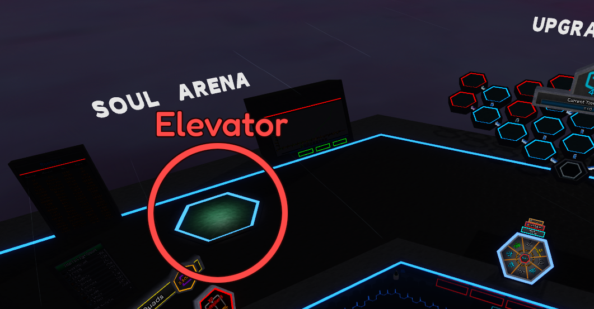

This page provides only a brief overview of the Soul Arena. More detailed information will be available in a separate category.
Soul Arena is the first unlockable side content in the Upgrade Tree.
It can be accessed via the elevator next to the graphs board.
Souls fight for you automatically.
There is no limit to how many Souls you can have at once, other than the number of Souls available to buy.
Once purchased, a Soul cannot be unequipped.
The only real way to drop waves is by removing all Stat Points and waiting to fail.
At the moment, there are 12 Souls available to buy — 11 normal and 1 event Soul.
Each Soul has different stats and skills, and specializes in a unique role — similar to character classes with distinct builds in an RPG.
Each normal wave spawns 10 enemies.
Every 10th wave is a boss wave.
You progress to the next wave when your Souls defeat all enemies or when the timer runs out.
If the timer runs out during a boss wave or when there are 30 or more enemies, you lose 10% of your current waves.
When your Souls defeat enemies, you gain XP toward Stat Points. Once the bar is filled, you earn 1 Stat Point.
Stat Points can be freely added to or removed from Stats without penalties.
Currently, there are 6 Stats you can allocate Stat Points to:
Damage - Multiplies damage of your Souls
Income - Multiplies the amount of coins dropped by enemies
Health - Multiplies health of your Souls
Knowledge - Multiplies the Stat Point XP gained
Move Speed - Multiplies movement speed of your Souls
Crit Chance Mult - Multiplies critical chance of your souls
If you want to check the boosts you've gained, move closer to any Stat to see more details.
For more detailed info, you can check your arena stats on the board next to the elevator.
The boosts shown in the Stats may differ from those on the Arena stats board, as each Soul has different base statistics.
Coins are used to buy Perk Eggs, Perks gained from them never reset
Each egg has a different pool of Perks, each with varying rarity.
Perks play a major role in progressing both within the Soul Arena and outside of it.
If you want detailed information about what each Perk does, you can click on it in the Perks board.
Every enemy defeated grants a small amount of Master Soul XP.
Once the bar is filled, your Master Soul Level increases.
Master Soul Level by itself doesn’t grant any boosts, but once the requirement is met,
you can perform a Soul Rebirth.
Performing a Soul Rebirth will reset your Waves and Master Soul Level. The requirement for the next Soul Rebirth will increase by 25.
Each Soul Rebirth grants one Soul Rebirth Point,
which can be spent on upgrades — some are extremely powerful.
Be careful with how you spend your points — you can redistribute them, but resetting has a 5-hour cooldown.